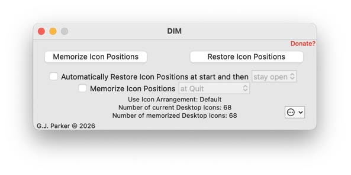
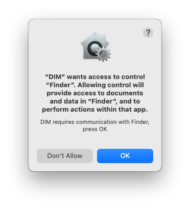
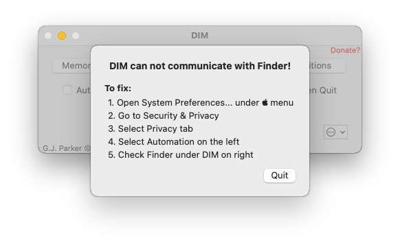

First time use
DIM can be placed anywhere on your system: Desktop, Applications, etc. If you want your Desktop to be cleaned up on boot up/restart, it can be specified as a Login Item in your user account as a nice way to have the application run automatically.
For best results, change your screen resolution and arrangement to your standard and adjust all of the Desktop icons to your preferred locations. Then just double click the “DIM” icon. A window similar to below will appear:
 
(ok, perhaps you don’t have 432 icons, but now you know why I wrote DIM…). Depending on your version of macOS, before you see this window, you may see something like this:
 
DIM communicates with the Finder to manipulate the Desktop and Finder window icons. Clearly you need to respond with “OK”, otherwise DIM will be blocked from working and you will see
 
instead.
Regardless, DIM has already memorized all the Desktop icon names, their positions and the screen resolution and has stored this information to the folder ~/Library/Containers/com.parker9.DIM-4/ ("~" means your Home directory). It also created the default Icon Arrangement named, surprisedly, “Default” as seen by the “Use Icon Arrangement” line. If you check “Select to Automatically Restore Icon Positions when starting”, it will simply Restore the icon positions (according to the selected Icon Arrangement). If you further check “Select to then Quit”, DIM will quit once it Restores the icon positions. You can now quit DIM (you do not need to leave it open or running), either close the window or select Quit from the menu.
G.J. Parker - http://www.parker9.com (Entonos)